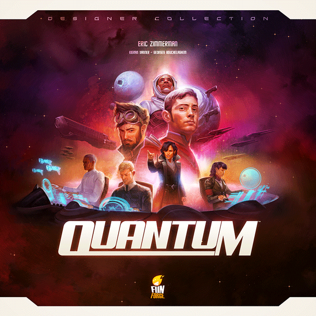
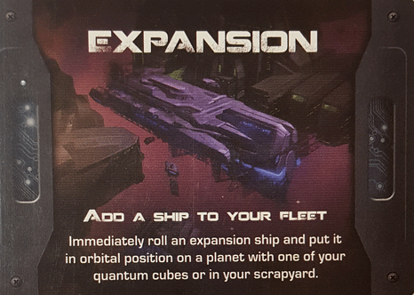
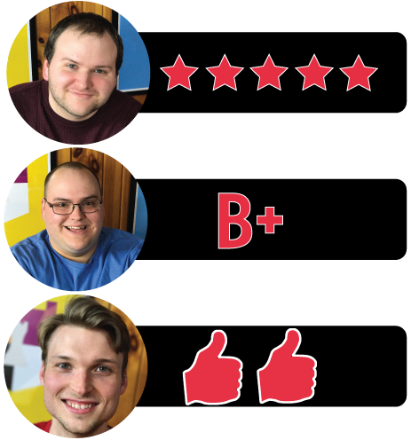

This week, Board Crazy reviews Quantum, a board game designed by Eric Zimmerman and published by Funforge. In Quantum, you can tactically maneuver throughout the galaxy or try to out-power your opponents through domination. Check out our thoughts on Quantum below!

D reviews Quantum
 (Author’s
note: this review is meant to accompany our gameplay video and will not
go in-depth on the game’s rules. If you’re interested in learning how
the game is played, please watch the video. It’s not bad.)
(Author’s
note: this review is meant to accompany our gameplay video and will not
go in-depth on the game’s rules. If you’re interested in learning how
the game is played, please watch the video. It’s not bad.)
“Theme” is something that I’ve talked about on occasion in previous reviews. It may not be important to some board gamers, but for me personally, a good theme can really elevate an otherwise solid game. In regards to Eric Zimmerman’s excellent Quantum, I think it is an important part of the game’s success, while also being responsible for some of the confusion that people seem to have about this game. Simply looking at the front of the box and its spiffy cover art, it’s clear that this is a game with a science fiction theme. Looking at the back of the box, it’s clear that this is some kind of strategy game that utilizes dice. I think this combination of elements might lead to a lot of people assuming that this is a 4X game like Eclipse. It is not.
Example of an Advance Gambit Card – you collect these by researching technologies or placing Quantum Cubes.
Quantum is, if anything, an abstract game. It certainly isn’t a “pure” abstract game, given that the dice rolling and use of cards add increased doses of randomness and asymmetry. And then, of course, there is that theme. Some people might argue that abstract games and themes are somehow antithetical, but I disagree. An abstract game, to me, must not rely on a theme, but they may certainly make use of one. And while it may not look like it at a glance, strip away all of the sci-fi trappings (and maybe a mechanic or two) from Quantum and this would still be a totally comprehensible and fun game.
Fortunately, they went the extra mile. Quantum doesn’t go too heavy on lore – just some little blurbs about each race and a bit of alternate history to set up the world. But all of the art in this game really evokes a clean, classic science fiction setting that I, personally, find very appealing. This bit of extra work goes a long way. It doesn’t take long before you really start thinking of your dice as if they are actually starships traveling through the galaxy and engaging in quick, tense battles. Of course, all of this would be for nothing if the game was poorly designed. Lucky for us, that’s not the case.
One of the best things about Quantum is how easy it is to learn and play. Almost all of the relevant information one needs is printed on the well-made player mats. And, since this is an abstract game, the mechanics are the same for all players, so there aren’t any caveats to worry about until the cards come into play. While simple to understand, I wouldn’t call the game easy. It’s incredibly well-balanced and the board is relatively small, making it very hard for any player to have a runaway or sneaky victory. While dice rolling (and, therefore, luck) is a big part of the game, I think Quantum does a fantastic job, via the reconfigure action and the ships’ free actions, of letting the players mitigate just how much of a role it plays. There’s also minimal downtime, which is always nice, and a player will never have a turn where there’s nothing they can do, which is an underrated virtue, in my estimation.
The player sheet for the Orion Republic. This sheet gives you an overview of the game actions as well as some areas for you to keep track of certain game components.
I really don’t have many negative things to say about this game. I could see it conceivably having some issues with kingmaking, given how close the games tend to be, but that has not yet been an issue in our games. I’ve also seen some complaints in the past about the quality of the components, specifically the dice, but mine are perfectly fine. In fact, the dice are one of my favorite parts of the game. They just look cool. So yeah, I’m giving this the big five stars. Quantum is quick, slick, and a ton of fun. I cannot recommend it enough.
D’s Rating: Five Stars out of Five.
Will reviews Quantum
 Dice-rolling
games scare me for one simple reason – I have no control over the
outcome of a roll. My strategy and approach can be rock-solid, but I’ll
still struggle if the dice aren’t landing my way. Too many tabletop
games fail to incorporate dice-rolling in an effective way, but I can’t
say that Quantum falls into that category. I was even prepared to
forgive Quantum ahead of time, considering that the entire game was
built around the usage of dice, but I didn’t need to. Somehow, the
game’s designer figured out how to remove the frustration from the
randomness in order to make a fair and balanced tabletop experience.
Dice-rolling
games scare me for one simple reason – I have no control over the
outcome of a roll. My strategy and approach can be rock-solid, but I’ll
still struggle if the dice aren’t landing my way. Too many tabletop
games fail to incorporate dice-rolling in an effective way, but I can’t
say that Quantum falls into that category. I was even prepared to
forgive Quantum ahead of time, considering that the entire game was
built around the usage of dice, but I didn’t need to. Somehow, the
game’s designer figured out how to remove the frustration from the
randomness in order to make a fair and balanced tabletop experience.
The Pax 653 game tile. Your fleet orbiting this planet needs a dice value equal to eight to place a Quantum Cube. There can be a total of two cubes of this planet.
Initially, I had specific expectations for Quantum. The box art and components indicated “sci-fi” and “4X strategy”, so that’s what I was prepared for. This is why I was so surprised to discover that Quantum has very little to do with science fiction or strategy; it’s actually an abstract dice game with elements of area control. The sci-fi theme is purely visual, as this game could have had any number of settings and still have been convincing. I did appreciate the artwork though, and some of the cards were definitely created with sci-fi in mind. As for the style of game, Quantum is assuredly not a strategy game. Its sessions move way too quickly and are too unpredictable for it to fall into that category. I must make this point clear – these are not bad things. Sure, the theme could have been incorporated a bit better, but the brief playtime and variable gameplay are highly refreshing.
Basically, the goal of Quantum is to construct five Quantum Cubes before your opponents do. In order to construct a cube, you must have “ships” in orbit around a planet that equal the number on the corresponding tile. I put quotations around the word “ships” because the “ships” in your fleet are actually dice. There are no spaceship minis – again, theme is not that important here. So if a planet has the number “8” printed next to it, you must have dice in orbit that equal eight exactly. You might be thinking that the gameplay sounds too simple, but it really isn’t. You’re never guaranteed to have the numbers you need to build a cube, and other players can attack and destroy your ships at any time, and vice versa. Also, you can only construct one cube per planet. So while a session might be going against you early on, that doesn’t mean you’re guaranteed to lose. Your opponents will eventually have to travel to the other side of the board, which is modular by the way, so you’ll have time to make up ground. I’m really impressed by how fair the overarching mechanics of Quantum are.
Quantum Cubes – place all of your Quantum Cubes and you win he game.
Combat is where luck becomes a bit more prevalent, but it rarely ever becomes tiresome. When two opponents clash, they both roll a D6 and add it to their ship’s number. So if one player has a ship that’s a two and they roll a five, their total is seven, which seems kind of low. However, low numbers are the strongest in Quantum, which is a unique mechanic. This means that the ships that are ones or twos are the most powerful. Since I always roll snake eyes whenever I play Risk, this combat was something I looked forward to (but I rolled a bunch of sixes…). By the end of a session of Quantum, I had won a number of engagements and had lost a good amount as well, but it never felt like the dice-rolling was random or unfair. As long as I ensured that my ship was lower in number than my opponent’s, I had the odds in my favor. Winning felt amazing while losing was soul-crushing, and that’s the way it should be.
In short, Quantum surprised me in more ways than one, and nearly all of these surprises were positive. If I had to nitpick, I would say that I would’ve enjoyed a bit more variety in the cards and more adherence to the sci-fi theme. In the end though, those minor negatives fade in mind once the gameplay kicks into gear. I really enjoy briefer games that maintain a bit of unpredictability while still offering players a chance to strategize, even if it’s only for their next turn. Honestly, I could’ve written twice as much for this review, but for the sake of brevity I’ll just say this – Quantum is pretty dang good. Oh, and the dice that come with it might be the best I’ve ever seen included with a game, so there’s that too.
I give Quantum a: B+
Graham reviews Quantum
 Quantum
is a fantastic game that really accomplished a lot. First, I want to
give a brief overview of how Quantum is played. I don’t typically like
to give an in-depth explanation of how games are played, but I think
it’s important to have some background to see why it works so well. You
can also watch our gameplay video here to learn how it’s played, but I will still give an explanation.
Quantum
is a fantastic game that really accomplished a lot. First, I want to
give a brief overview of how Quantum is played. I don’t typically like
to give an in-depth explanation of how games are played, but I think
it’s important to have some background to see why it works so well. You
can also watch our gameplay video here to learn how it’s played, but I will still give an explanation.
The object of the game is to place all of your quantum cubes on the board. You can do this in two different ways: by getting the total value of ships orbiting a planet to match the number next to the planet or by increasing your dominance. Dominance is represented by a die. Your dominance starts at “1” and increases by “1” for each battle you win. When you reach “6” on your dominance die, you can place a Quantum Cube wherever you want, and the dominance die resets.
The game dice – These are the dice you roll at the start of the game to determine which ships are in your fleet.
In Quantum, you start with a set of dice that you roll – these dice represent the ships in your fleet. A value of “1” is a battlestation, which is the slowest but most powerful ship, and a value of “6” is a scout, which is the fastest but least powerful ship. The dice values are used to determine how many spaces the ships can move as well as the advantage they get during battles. Each type of ship has a special ability associated with it. For example, battlestations allows you to attack an adjacent enemy ship as a free movement, while a scout can be re-rolled at any time. Like I said, each number comes with a special ability that allows you to move or manipulate your dice in a unique way. These dice mechanics are the driving force of the game, and a majority of the fun will come from trying to use the special abilities of your dice to get an advantage over your opponents.
As I mentioned, battles are an important part of the game since they raise your dominance, and they’re pretty simple in Quantum. Whenever a ship moves into an enemy ship’s space, it represents an attack on the enemy ship. The attacker rolls the black die, and the defender rolls the white die. You add the number you rolled on your die to the value on your ship, and the lowest total number wins the battle. That’s why a battlestation is so powerful, because you are only adding “1” to the total you rolled in battle. In the case of a tie, the attacker wins the battle, so it’s advantageous to be the aggressor in a game of Quantum. As a result, this leads to a lot of battles. There are a few other aspects of the game that I’m not going to go over in-depth because they are pretty simple. For example, you can research technologies. This is represented the same way the dominance die is. You can use one of your actions to increase your technology die, and once you reach a value of “6”, you can select a card that gives your empire some kind of benefit.
You can see that Quantum is a pretty abstract game. Frequently, these abstract games seem to focus solely on mechanics and miss the theme entirely, but Quantum nailed both. The theme they used meshed so well with the mechanics. I never struggled to take on the the role as a galactic commander controlling my fleet of ships, and I think it worked for a couple of reasons. First, you still get to move around a board, attack your opponents, research technologies, and grow your empire. Second, there is a ton of interaction among players. You can block another player’s path, take a planet before they get it, or attack them outright. The presence of your opponent is always there, which provide a threat that you have to be conscious of at all times. This type of interaction is missing from some other games that we’ve played, like Roll Player or Tiny Epic Galaxies. Finally, despite it being a much more abstract game, there is still a lot of strategy and planning involved. For example, you have to plan and pick which ships you want to orbit which planets while still worrying about what special abilities these ships have, and you still have to keep track of the Advance Cards in your opponents’ possession. All of these aspects combined make it really easy to immerse yourself into this game.
Ultimately, there are a lot of other things I liked about Quantum. I’ll list some more reasons here, but since this review is starting to get long, I won’t go into detail. First, the dice mechanics were done fantastically – they are unique and fun to play around with. Next, the pieces are well crafted, and I want all of my dice in future board games to be the same as the ones included in Quantum. Finally, I love the game board. Each planet has its own square tile, and the tiles can be placed in any order and any shape. This provides a ton of replayibility to the game. I really can’t wait to play this one again. Quantum is one of the best games I’ve played recently, so I give it two thumbs up.

Leave a Reply
You must be logged in to post a comment.